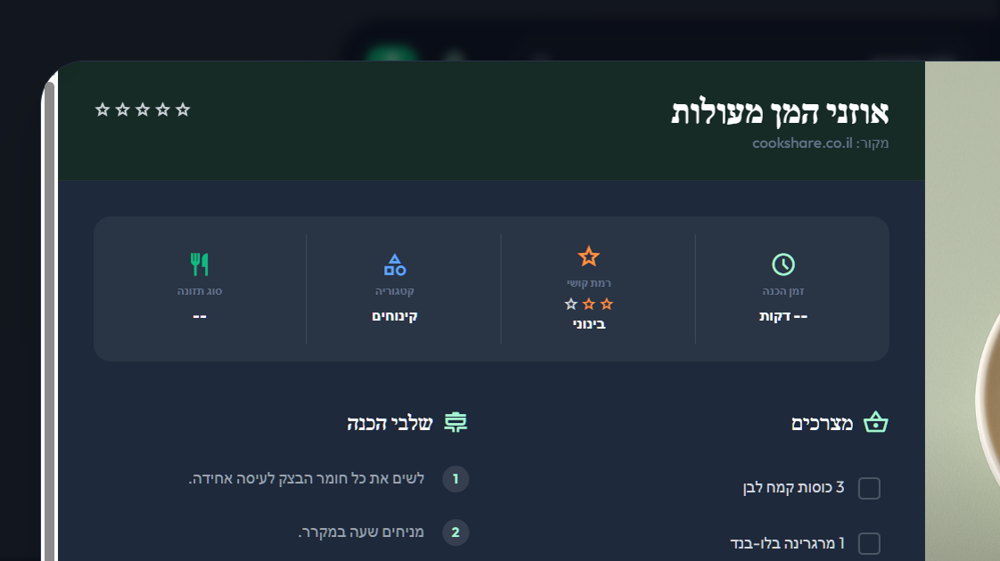
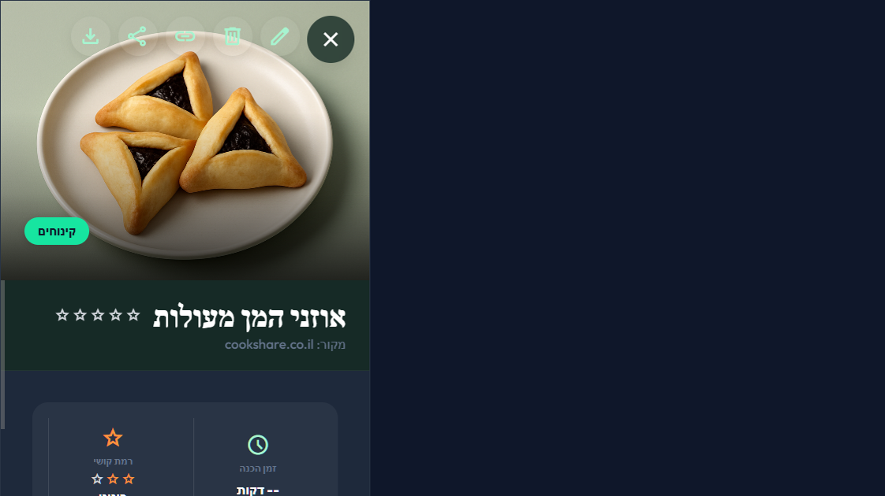
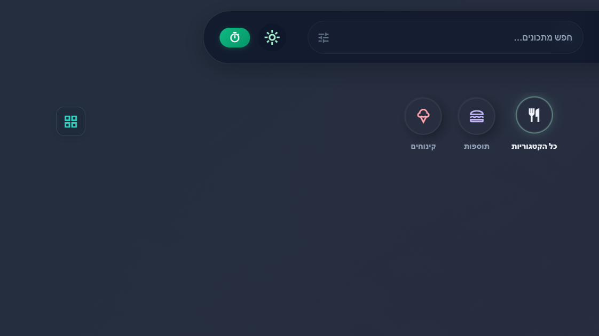

מצגת ממצאים עם צילומי מסך · דסקטופ + מובייל
תאריך: 2026-06-11 · localhost:3000 · משתמש מחובר
5 ממצאים עיקריים — 1 חומרה גבוהה, 2 בינונית, 2 נמוכה. המיקוד: נגישות אייקונים וחוויית מובייל.
| # | בעיה | חומרה | מסך |
|---|---|---|---|
| 1 | שמות Material Symbols נחשפים לקורא מסך ולכותרות | גבוהה | כל האתר |
| 2 | אין חיפוש במובייל (≤768px) | בינונית | Header / מובייל |
| 3 | זמן הכנה ריק מוצג כ־"-- דקות" | נמוכה | מודל מתכון |
| 4 | FABs חופפים לכרטיסים במובייל | בינונית | 375px |
| 5 | כפתורי פעולה על תמונת המתכון | נמוכה | מודל מתכון |
קוראי מסך וכותרות מציגים טקst אנגלי במקום אייקון בלבד
קבצים: index.html

מודל מתכון — דוגמה לדליפת שמות אייקון
שדה החיפוש מוסתר מתחת ל-768px — אין חלופה
אייקון חיפוש שפותח overlay / מגירה, או שורת חיפוש sticky מתחת ל-header.
קבצים: index.html, css/style.css

375px — אין שדה חיפוש ב-header
כפתורי + ו-AI יושבים על כרטיסי המתכונים
העלאת FAB stack או מרווח תחתון ל-.main / .recipe-grid.
קבצים: css/style.css
מובייל — FAB על כרטיס
נקודות חוזק שכדאי לשמר

דף הבית — מראה מזוהה וחם
שינויים קטנים עם השפעה גדולה
| עדיפות | פעולה | מאמץ | קובץ |
|---|---|---|---|
| 1 | aria-hidden="true" על כל material-symbols דקורטיבי | ≤30 דק | index.html |
| 2 | זמן הכנה ריק → "לא צוין" או הסתרה | ≤15 דק | js/main.js |
| 3 | padding-bottom ל-grid במובייל (FAB) | ≤20 דק | css/style.css |